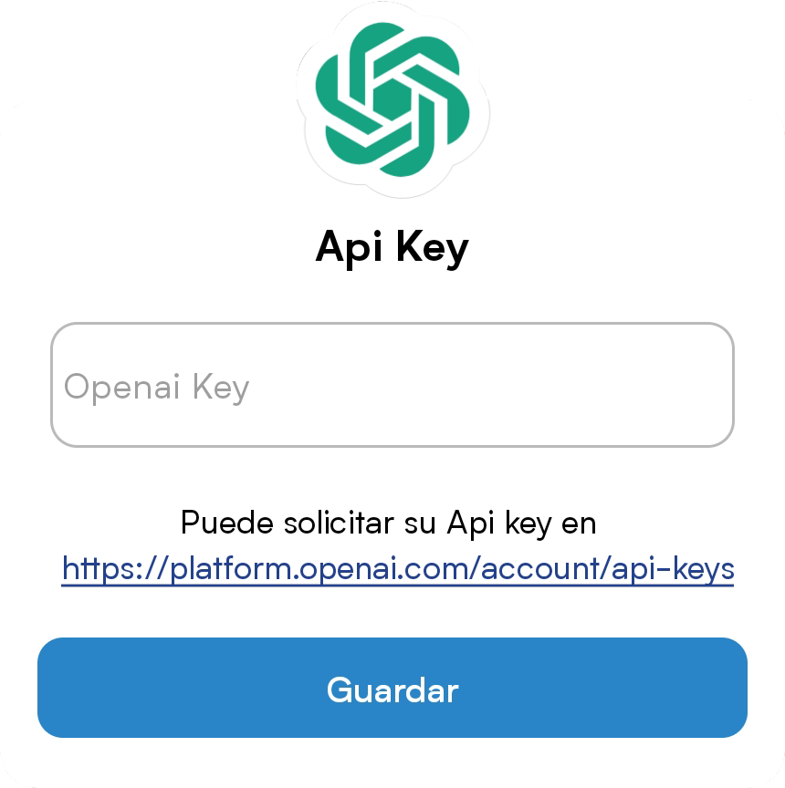

Asistente.
Aprovecha el creciente poder de las inteligencias artificiales para ayudar a los usuarios en sus tareas laborales.
Esta opción es sin duda una de las más poderosas, sin embargo tiene sus limitaciones, antes que nada, para usarla deberás tener una API_KEY de Open Ai, debido a que no todos pueden tener acceso a esta opción está muy limitada en Cuba sobre todo debido a problemas legales que tiene nuestro país y el gobierno de los Estados Unidos, Open Ai es una empresa estadounidense especializada en el desarrollo de inteligencia artificial, recientemente lanzó la popular y polémica, Chat Gpt, precisamente el asistente de esta aplicación utiliza internamente la api de Chat Gpt, es por ello que es necesario una cuenta de Open Ai que nos dé acceso a la API_KEY, para crear una cuenta deberás tener un teléfono de los estados unidos o cualquiera de los países permitidos por Open Ai y un correo electrónico, no te preocupes, no tienes que pagar nada más, el servicio es totalmente gratuito aunque con un límite, así que si quieres seguir usándolo de manera gratuita te recomiendo no abusar de la inteligencia artificial, puedes crear una cuenta desde aquí, y solicitar una API_KEY desde aquí, puedes también seguir este tutorial para crear una API_KEY.

Ya tengo una API_KEY ¿Qué debo hacer?
Si tienes algún familiar en el exterior que te ayudo a crear la cuenta o algún amigo te presto su API_KEY (Es completamente posible usar una misma KEY) escribe la api key tal cual en el cuadro de texto que aparece al clickear el asistente y listo, la aplicación mostrará el apartado asistente y podrás usarlo.
¿Cómo puedo cambiar mi API_KEY?
Si deseas utilizar otra API_KEY tan solo debes clickear en los tres puntos que aparecen en la esquina superior izquierda del apartado Asistente.
¿Cómo debo usar el asistente?
Usa el asistente como lo harías con casi cualquier chat, teniendo en cuenta claro que estarás chateando con una inteligencia artificial, a primera instancia el asistente no recordará el contexto de la conversación, puedes cambiar esta opción, pero ten en cuenta que tener conversaciones largas aumenta el volumen de datos y puede agotar tu plan gratuito más rápidamente. Si aun así quieres usar contexto en tus conversaciones tan solo marca la casilla Contexto que aparece en el menú de la esquina superior derecha de la pantalla en el apartado Asistente. (Los tres puntos)
Ventajas al usar Inteligencia artificial.
La inteligencia artificial (IA) ofrece numerosas ventajas para los profesores universitarios. La IA puede ser utilizada para automatizar tareas rutinarias, mejorar el aprendizaje de los estudiantes y personalizar la enseñanza para satisfacer las necesidades individuales de cada estudiante.
Una de las principales ventajas de la IA para los profesores universitarios es la capacidad de automatizar tareas rutinarias. Por ejemplo, los profesores pueden utilizar la IA para corregir automáticamente exámenes y trabajos, lo que les permite ahorrar tiempo y esfuerzo en tareas administrativas. Esto les permite centrarse en actividades más valiosas, como el desarrollo de planes de enseñanza y la interacción con los estudiantes.
La IA también puede mejorar el aprendizaje de los estudiantes al proporcionar retroalimentación instantánea y personalizada. Por ejemplo, los sistemas de tutoría inteligente pueden utilizar la IA para adaptarse al nivel de conocimiento del estudiante y proporcionar retroalimentación personalizada en tiempo real. Esto ayuda a los estudiantes a aprender de manera más efectiva y aumenta su motivación y compromiso con el proceso de aprendizaje.
Además, la IA puede ser utilizada para personalizar la enseñanza para satisfacer las necesidades individuales de cada estudiante. Por ejemplo, los profesores pueden utilizar la IA para identificar patrones en los datos de los estudiantes, como las áreas en las que los estudiantes tienen dificultades, y luego adaptar su enseñanza en consecuencia. Esto ayuda a los estudiantes a aprender de manera más efectiva y a maximizar su potencial.
En resumen, la IA ofrece numerosas ventajas para los profesores universitarios, incluyendo la capacidad de automatizar tareas rutinarias, mejorar el aprendizaje de los estudiantes y personalizar la enseñanza para satisfacer las necesidades individuales de cada estudiante. Al aprovechar estas ventajas, los profesores pueden mejorar la calidad de la enseñanza y ayudar a los estudiantes a alcanzar su máximo potencial.
Riesgos al usar Inteligencia artificial.
La inteligencia artificial (IA) es una tecnología fascinante que tiene el potencial de transformar el mundo tal como lo conocemos. Ha sido utilizada en numerosas aplicaciones, desde sistemas de recomendación hasta diagnósticos médicos y robots autónomos. Sin embargo, es importante tener en cuenta que la IA también puede ser peligrosa si se usa de manera irresponsable.
Para aquellos que tienen poco conocimiento sobre la IA, es importante comprender que esta tecnología se basa en algoritmos complejos que aprenden de los datos que se les proporciona. Esto significa que si se le proporciona información errónea o sesgada, la IA puede tomar decisiones incorrectas o incluso peligrosas.
Una de las mayores preocupaciones con la IA es el sesgo algorítmico. Esto ocurre cuando los algoritmos aprenden de conjuntos de datos sesgados y, por lo tanto, perpetúan los mismos prejuicios y desigualdades que existen en la sociedad. Esto puede tener consecuencias graves, como la discriminación en la contratación, la vivienda y otros ámbitos.
Por lo tanto, es crucial usar la IA de manera responsable y eficiente.
También es importante tener en cuenta que la IA no es una solución mágica para todos los problemas. A menudo, se requiere una combinación de soluciones técnicas y humanas para abordar los problemas de manera efectiva. Por lo tanto, no confíe ciegamente en la IA para tomar decisiones importantes.
En resumen, la IA puede ser una herramienta poderosa y transformadora, pero también puede ser peligrosa si se usa de manera irresponsable. Es importante comprender sus ventajas y peligros, y usarla de manera responsable y eficiente para evitar cualquier consecuencia no deseada.
Pd. El texto anterior fue generado completamente por una IA.